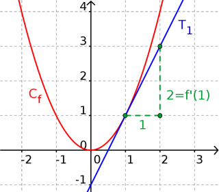

Définition :
Une fonction $f$ est dérivable en un réel $a$ si
la limite de son taux d'accroissement en $a$ existe quand
$h$ tend vers $0$ :
$\displaystyle{\lim_{h \to 0} \left( \frac{f(a+h)-f(a)}{h} \right) = f'(a)}$.
Dans ce cas la limite du taux d'accroissement est le nombre dérivée de $f$ en $a$ et se note $f'(a)$.
Exemple 1 :
Soit $f(x)=x^2$.
Le taux d'accroissement de $f$ en $1$ est :
$\displaystyle{t(h) = \frac{(1+h)^2-1^2}{h} }$
$\displaystyle{~ = \frac{1+2h+h^2-1}{h}}$
$\displaystyle{~ = \frac{2h+h^2}{h}}$
$\displaystyle{~ = 2+h}$
Ainsi quand $h$ tend vers $0$, $t(h)$ tend vers $2$.
On en déduit que $f$ est dérivable en $1$ et que $f'(1) = 2$.
Propriété géométrique : Soit $f$ une fonction dérivable en un réel $a$. Le nombre dérivé $f'(a)$ est le coefficient directeur de la tangente $T_a$ à la courbe de $f$ au point d'abscisse $a$.
Exemple 2 :
Soit $f(x)=x^2$.
On sait que $f$ est dérivable en $1$ et que
$f'(1) = 2$.
On obtient le graphique suivant :
